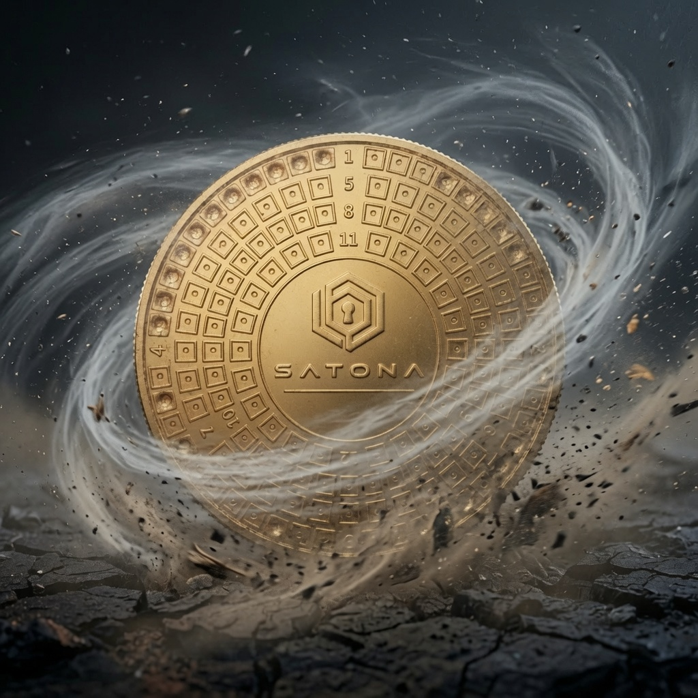

CORROSION
Résiste à l’oxydation
Le laiton ne rouille pas.
PHRASE DE RÉCUPÉRATION INVISIBLE • COMPATIBLE BIP39
SATONA convertit automatiquement chaque mot BIP39 en code binaire universel avant son marquage sur une plaque en laiton massif. Même si quelqu'un découvre votre sauvegarde, votre Phrase de récupération n'y apparaît jamais en clair.
Compatible avec les phrases de récupération BIP39 utilisées par les principaux wallets.
Les logos sont des références de compatibilité, pas des partenariats.


LE CONCEPT
Le standard repose sur une liste immuable de 2 048 mots numérotés de 0 à 2 047.
SATONA convertit la position de chaque mot de votre Phrase de récupération en code binaire grâce à notre outil disponible ici, puis vous permet de marquer définitivement la plaque avec le poinçon automatique fourni dans le kit.
CONÇU POUR SURVIVRE
Une sauvegarde physique conçue pour résister au feu, à la corrosion, aux chocs et au temps.
CORROSION
Le laiton ne rouille pas.

TEMPÉRATURE
Au-delà des températures d’un incendie domestique.

RÉSISTANCE
Résiste aux impacts et à l’écrasement.
TEMPS
Conçu pour traverser le temps, à l’air libre comme en immersion prolongée.
PROCÉDURE
01
Retrouvez l’équivalent binaire de chaque mot de votre phrase de récupération.
Utilisez le convertisseur ci-dessous ou téléchargez la liste BIP39 pour travailler entièrement hors ligne.
02
Dévissez l’extrémité conique du poinçon automatique, insérez l’une des deux pointes fournies, puis revissez l’ensemble.
Le poinçon est alors prêt à être utilisé.
03
Positionnez la pointe au centre de la case à marquer, puis exercez une pression jusqu’au déclic.
Répétez l’opération jusqu’à 8 fois sur la même case afin d’obtenir une empreinte plus profonde et durable.
04
Avant de ranger votre plaque, contrôlez soigneusement chaque marquage afin de vérifier que votre phrase pourra être correctement reconstituée.
Une fois la vérification terminée, conservez la plaque dans un endroit discret et sécurisé, connu de vous seul.
POURQUOI LE PHYSIQUE
Une phrase de récupération est un secret essentiel. SATONA propose un format physique pour un stockage réfléchi, hors ligne — sans remplacer de bonnes pratiques de sécurité.
01
Toute la conversion est réalisée sans connexion. Votre Phrase de récupération ne quitte jamais votre environnement.
02
Chaque mot BIP39 est converti en son index binaire universel sur avant le marquage.
03
Le poinçon automatique marque définitivement la plaque en laiton. Aucun marteau, aucune batterie et aucun appareil électrique ne sont nécessaires.
HORS LIGNE D’ABORD
Pour une utilisation réelle de SATONA, privilégiez la liste BIP39 téléchargeable et effectuez toute la conversion hors ligne.
RISQUE 1
Un appareil compromis peut enregistrer ce que vous saisissez, y compris votre phrase de récupération.
RISQUE 2
Une phrase saisie sur un site peut être exposée par une extension malveillante, une faille de sécurité ou un appareil déjà compromis, même si le site lui-même ne conserve aucune donnée.
RISQUE 3
Toute personne qui obtient votre phrase de récupération peut potentiellement restaurer votre portefeuille et prendre le contrôle des actifs qu’il protège.
Les outils en ligne SATONA sont destinés à l’apprentissage ou à la conversion d’un mot isolé. Pour une utilisation réelle, travaillez entièrement hors ligne.
INFORMATIONS PRODUIT
Le kit SATONA rassemble tout le nécessaire pour créer une sauvegarde physique durable de votre phrase de récupération BIP39, entièrement hors ligne.
Chaque élément a été sélectionné pour offrir une utilisation simple, précise et pérenne.
FAQ
Non. SATONA est un support physique conçu pour sauvegarder les informations d’une phrase de récupération BIP39 sous forme binaire.
Un hardware wallet sert à conserver et utiliser les clés privées nécessaires aux opérations du wallet. SATONA n’est pas un wallet : il sauvegarde physiquement les informations d’une phrase de récupération BIP39 afin de pouvoir les reconstituer si nécessaire. Leurs fonctions peuvent donc être complémentaires.
Non. SATONA ne stocke aucun actif numérique. La plaque contient uniquement la représentation binaire des informations de récupération que vous choisissez d’y enregistrer.
Toute personne disposant de votre phrase de récupération complète peut potentiellement restaurer le wallet correspondant sur un appareil compatible et accéder aux actifs qu’il protège. Considérez-la comme une information hautement sensible.
SATONA est destiné aux wallets utilisant une phrase de récupération BIP39 anglaise de 24 mots maximum. Vérifiez la documentation de votre wallet avant utilisation : tous les wallets n’utilisent pas BIP39.
Non. Vous marquez l’index binaire de 11 bits de chaque mot BIP39, jamais le mot lui-même.
SATONA permet d’encoder jusqu’à 24 mots BIP39 : les mots 1 à 12 au recto et les mots 13 à 24 au verso.
Oui. Une fois la liste BIP39 téléchargée, toute la conversion et le marquage peuvent être réalisés hors ligne ; c’est la méthode recommandée.
Le kit comprend une plaque SATONA en laiton massif, un poinçon à percussion automatique, deux pointes, une boîte premium à fermeture magnétique, une notice d’utilisation et un QR Code donnant accès au mode d’emploi SATONA.

SATONA
Kit SATONA complet
49,90 €